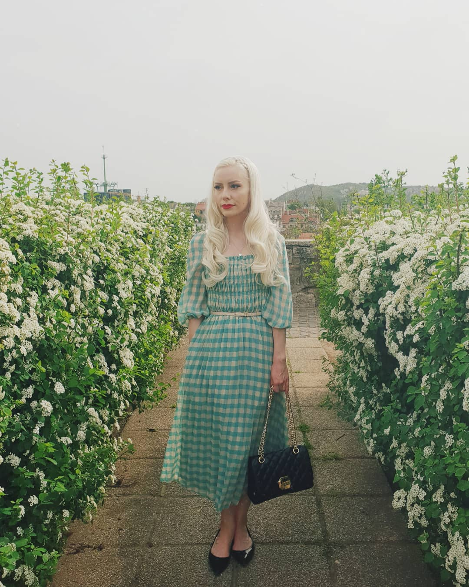
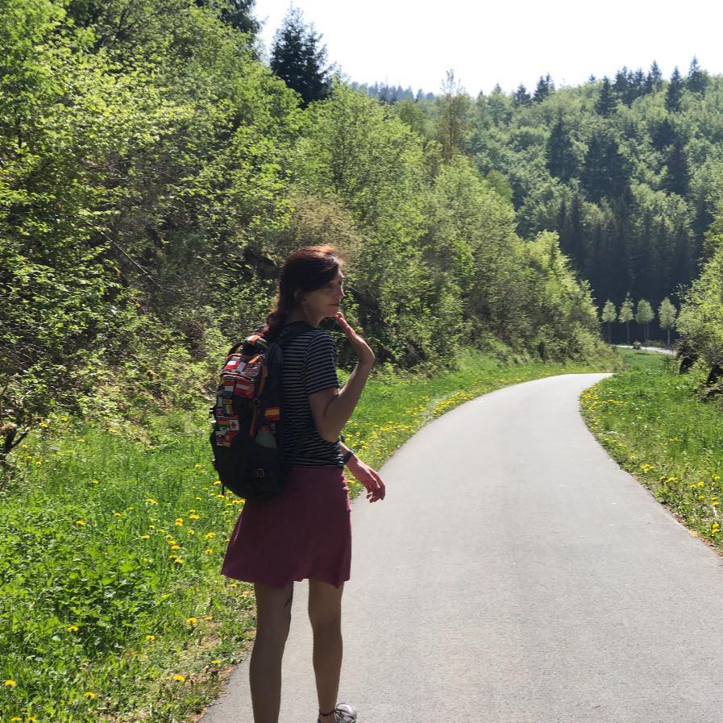

Discover the Magic of Irish Music
Experience the enchantment of traditional Irish music and connect with talented musicians and vibrant venues.
Explore Bands Discover Venues
The Lively Leprechauns
Get ready for a foot-stomping, high-energy performance by The Lively Leprechauns. Join us for an unforgettable night of Irish music and craic!
Learn More
Dolan's Pub, Limerick
Experience the authentic Irish atmosphere at The Celtic Corner. From traditional music sessions to hearty pub grub, it's a true taste of Ireland.
Learn MoreWhat Our Customers Say

The music scene in Ireland is simply incredible! Gigs Eire helped me discover amazing bands and venues. I'm forever grateful for the memories created.
Megan Fay

Gigs Eire is a game-changer! As a musician, I've connected with fellow artists and found great opportunities to perform. It's a must-have platform for Irish musicians.
Lindsay Savage